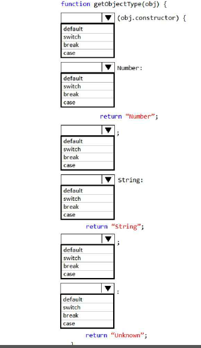

You are creating a function by using JavaScript. The function accepts an object as the parameter and
returns a string that identifies the data type of the object.
You have the following requirements:
- The function must return "Number" if the object is a number.
- The function must return "String" if the object is a string.
- The function must return "Unknown" if the object is neither a number nor a string.
How should you build the code segment? (To answer, select the appropriate options from the drop-down lists in the answer area.)

Solución:
function getObjectType(obj)
{
swicth (obj.constructor) {
case Number: return "Number"; break;
case String: return "String"; break;
default: return "Unknow";
}
}
Explicación:
Use the switch statement to select one of many blocks of code to be executed.
Syntax
switch(expression) {
case n:
code block
break;
case n:
codeblock
break;
default:
default code block
}
This is how it works:
The switch expression is evaluated once.
The value of the expression is compared with the values of each case.
If there is a match, the associated block of code is executed.
Object.prototype.constructor
Returns a reference to the Object function that created the instance's prototype. Note that the value of
this
property is a reference to the function itself, not a string containing the function's name. The value is
only
read-only for primitive values such as 1, true and "test".
Description
All objects inherit a constructor property from their prototype:
var o = {};
o.constructor === Object; // true
var a = [];
a.constructor === Array; // true
var n = new Number(3);
n.constructor ===Number; // true
The constructor property is created together with the function as a single property of func.prototype.
Reference:
https://www.w3schools.com/js/js_switch.asp
https://developer.mozilla.org/en-US/docs/Web/JavaScript/Reference/Global_Objects/Object/constructor\